| Maßnahmen zur Vermeidung zusätzlicher Hautreizungen | |
|---|---|
| Art der Reizung | Zu vermeiden (Beispiele) |
Supportive Therapie
Schmerzen
Therapie
Schritt (Bei Eskalation beibehalten)
Metamizol 40gtt 1-1-1-1
Schritt (Morphin 2% 2gtt=2,5mg)
Morphin 2% Lösung 2gtt b.B. Sperrzeit 4 Stunden, maximal 4mal täglich
Laxoberal 8gtt b.B. 0-0-0-1
Ondansetron 4mg s.l. b.B. max. 3mal Täglich
Cave: über Fahrsicherheit, -tauglichkeit aufklären Abschnitt 1.1
Schritt
Morphin 2% Lösung 2gtt 1-1-1-1 sowie
2gtt b.B. Sperrzeit 4 Stunden, maximal 4mal täglich
Laxoberal 8gtt b.B. 0-0-0-1
Umrechnung der Opiate s. Abbildung 2
Schmerzen können als Dauerschmerzen Schmerzspitzen oder Durchbruchschmerzen auftreten Abbildung 1.
Dauerschmerzen können mit
- retardierten Medikamenten oder mit
- regelmäßigen Gaben von kurzwirksamen Medikamenten
behandelt werden.
Durchbruchschmerzen sind plötzlich auftretende Schmerzepisoden, die trotz der Dauermedikation auftreten und kurzwirksame Schmerzmittel erfordern.
Schmerzspitzen beschreibt eine plötzliche Zunahme der Schmerzstärke aus einem niedrigen Ruheschmerz heraus, z.B. beim Schlucken vom feste Speisen im Rahmen einer Mucositis °I.
Eine adäquate Schmerztherapie kombiniert daher regelmäßige Langzeitmedikamente und kurzwirksame (Bedarfs-)Medikamente.
Anfangs kann es jedoch sein, dass nur eine Bedarfsmedikation erforderlich ist.
Bei opioid-naiven Patienten kann es zudem sinnvoll sein, die Ersteinstellung mit regelmäßigen Gaben kurzwirksamer Opioide zu beginnen, da mögliche Nebenwirkungen dann nur kurz anhalten s. auch Abschnitt 1.3 .
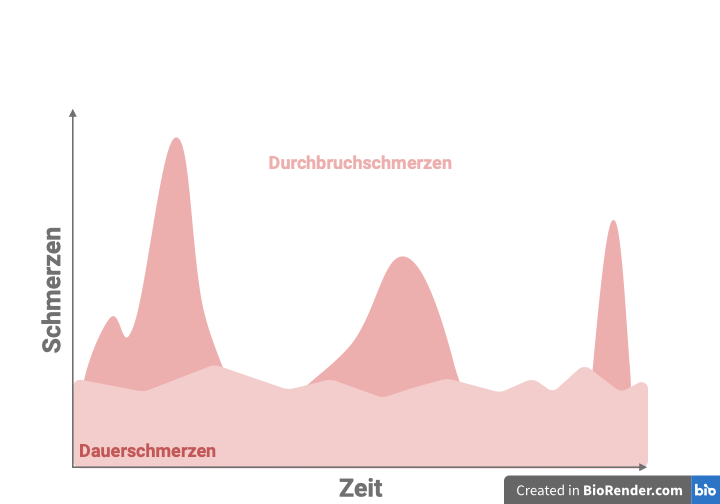
Aufklärung Fahrsicherheit/-tauglichkeit
Nach § 24a Straßenverkehrsgesetz ist das Autofahren nach medizinisch indizierte Schmerzmitteleinnahme erlaubt. Jeder Verkehrsteilnehmer ist für seine Fahrtauglichkeit selbst verantwortlich. Nach erfolgter Hiweiss auf die Gefahr, kann der Arzt bei möglicher Unfälle nicht mehr haftbar gemacht werden.
Sollte jedoch Zweifel an der Fahreignung bestehen, muss dies dem Patienten mitgeteilt werden.
Umrechnung
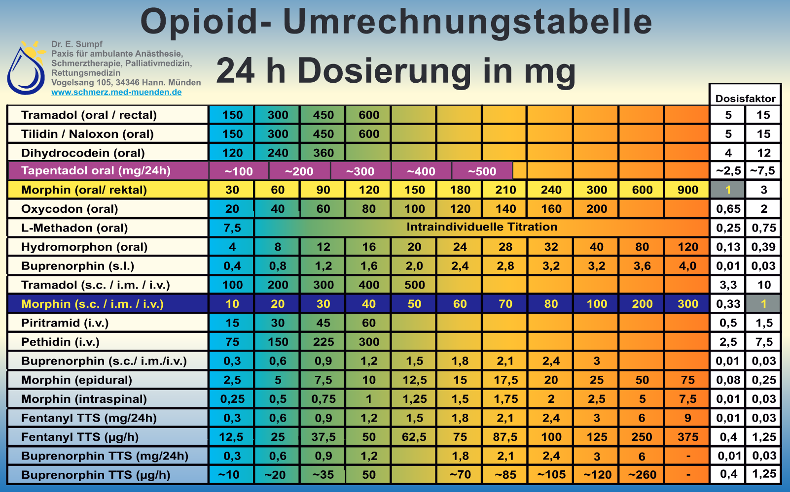
Sonderfall Fentanyl
Fentanyl sublingual ist nur für Patienten geeignet, die als tolerant gegenüber ihrer Opioidtherapie gegen Dauerschmerzen anzusehen sind. Als opioidtolerant gelten diejenigen Patienten, die mindestens 60 mg orales Morphin täglich oder eine äquianalgetische Dosis eines anderen Opioids über eine Woche oder länger erhalten.
Die transdermale Anwendung bei Opioid-naiven Patienten ist nicht empfohlen.
Um Überdosierung zu vermeiden wird empfohlen, dass Opioid-naive Patienten niedrige Dosen von kurz wirksame Opioide (z. B. Morphin, Hydromorphon) erhalten, die titriert werden, bis eine äquianalgetische Dosierung entsprechend transdermales Fentanyl mit einer Freisetzungsrate von 12 µ/h oder 25 µ/h erreicht ist.
Buprenorphin sublingual
Die Wirkung von Buprenorphin-HEXAL sublingual setzt innerhalb von 30 Minuten nach der Anwendung ein (ähnlich wie Hydromorphon akut oder Morphin Tropfen) und hält in der Regel 6-8 Stunden an.
Demenssprechend ist dieses Präparat nicht als Bedarfsmedikation geeignet.
Durchfälle
Therapie
Schritt
Loperamid: 4 mg einmalig, danach nach jedem ungeformten Stuhl 2 mg. Eine tägliche Dosis von 6 Filmtabletten (entsprechend 12 mg) darf nicht überschritten werden.
Schritt Cave: Ab hier Off-Lable jedoch leitliniengerechte Therapie1
2mg Loperamid alle 4 Stunden
Schritt
2 mg alle 2 Stunden
Nach fachinformationgerechte Anwendung von Loperamid kann der Algorithmus von Benson et al.2 verwendet werden. Diese Dosisschema übersteigt jedoch die Maximale zugelassene Dosis. Patienten mussen darauf hingewiesen werden.1
Die empfohlene Dosierung ist initial 4 mg gefolgt von 2 mg alle 4 Stunden. Tritt hierunter innerhalb von 12 - 24 Stunden keine Besserung der Symptomatik ein, kann die Dosis auf 2 mg alle 2 Stunden gesteigert werden.
Strahlenzystitis
Therapie
Schritt
Tamsulosin 0,4mg 1-0-0
Schritt Abschnitt 3.0.1
Tamsulosin 0,8mg 1-0-0
Diese Dosis übersteigt die Maximale Dosis gemäß Fachinformation, darauf sind die Patienten hinzuweisen.
Schritt
Dutasterid/Tamsulosin 0,5 mg/0,4 mg 1-0-0
Spasmolitika vermeiden s. Abschnitt 3.0.3
Die Strahlenzystitis äußert sich durch obstruktiven Symptomen wie Nykturie, Pollakisurie, Harndrang und verminderter Stärke des Harnstrahls. Es gibt nur wenige wirksame Behandlungsmöglichkeiten. Traditionell wird die Strahlenzystitis mit Analgetika behandelt. Dieser Ansatz berücksichtigt jedoch nicht die eigentliche Pathophysiologie.
Dementsprechend erfolgt die Behandlung hauptsächlich über \(\alpha _1\)-Blocker wie Tamsulosin ein.
\(\alpha _1\)-Blocker blockieren die \(\alpha _1\)-Adrenorezeptoren und hemmen so die durch Noradrenalin ausgelösten Signalwege, die normalerweise eine Kontraktion der glatten Muskulatur in der Prostata, im Harnblasenhals und in der Harnröhre verursachen. Dies führt zur eine Verbesserung des Urinflusses.3
Tamsulosin 0,8mg 1-0-0
Prosinitz et al.4 führten eine Pilotstudie mit 26 strahlentherapeutische Patienten durch. Von 10 Patienten, die auf 0,4 mg Tamsulosin täglich nicht reagierten, berichteten 6 eine Besserung der Symptome bei 0,8 mg täglich.
Interessanterweisse linderte Tamsulosin die Symptome nicht nur bei Patienten mit benigne Prostatahyperplasie (Ansprechrate = 94 %), sondern auch bei Patienten ohne BPH (Ansprechrate = 63 %). Dementsprechend kann diese Dosierung verwendet werden.
Dutasterid/Tamsulosin
Dutasterid gehört zur Arzneimittelgruppe der so genannten 5-\(\alpha\)-Reduktase-Hemmer. Diese Enzym, ist ein obligat für die Umwandlung von Testosteron zu Dihydrotestosteron (DHT). Dementsprechend blockiert Dutasterid die Umwandlung von Testosteron zu DHT.
In Folge wuchert das Prostatagewebe nicht mehr so stark weiter und verringert sich mitunter sogar.
Im Gegensatz zu Finasterid, das nur die 5\(\alpha\)-Reduktase vom Typ 2 hemmt (5AR2) hemmt, wirkt Dutasterid als dualer 5ARI-Hemmer, der sowohl die 5AR-Isoenzyme vom Typ 1 als auch vom Typ 2 (5AR1 und 5AR2) hemmt.
Die duale Hemmung von sowohl 5AR1 als auch 5AR2 führt zu einer stärkeren und konsistentere Hemmung der Umwandlung von Testosteron in DHT als die selektive Hemmung von 5AR2 allein durch Finasterid.5
Spasmolytika / Anticholinergika
Die Wirkung der zur Verfügung stehenden Anticholinergika (z.B. Spasmex®) ist in der Praxis relativ gering. Unerwünschte Nebenwirkungen tretten jedoch häufig auf, u.a. Mundtrockenheit und Obstipation.
Vor allem jedoch: Harnverhalt, zudem können Anticholinergika auch das Risiko für Stürze und Verwirrtheit erhöhen, insbesondere bei älteren Patienten. In Anbetracht dieser ungünstige Wirkung-Nebenwirkung-Korrelation, sollten diese Medikamente vermeiden werden sollten.
Strahlendermatitis
Therapie
Schritt
Aufklärung über Hautpflege, einschließlich Reinigungsmittel und Feuchtigkeitscremes, sowie die Vermeidung von Reizstoffen und Sonneneinstrahlung
Schritt
Ab Tag 1 der Bestrahlung: Bepanthol® Körperlotion 1-0-1 o.g. Maßnahmen fortführen
Schritt
3.1 Lavasept Gel 1-1-1
Bepanthol® Körperlotion 1-1-1
Bethamethasonvalerat 0,1% Creme3.2 Lavasept Gel 1-1-1
Bepanthol® Körperlotion 1-1-1
Mometasonfuroat Salbe 1mg/g (10 g Tube)
3.3 Bepanthol® Körperlotion 1-1-1
Bethamethasonvalerat 0,1% Creme für 7 Tage
Dosierung: Eine FTU (s. Abschnitt 4.4.2.1.1) ein- bis zweimal täglich (s. Abschnitt 4.4.2.1.2)
Eine der häufigsten Nebenwirkungen der Strahlentherapie, insbesondere bei Patienten mit Brust-, Kopf-, Hals- und Analkrebs, ist die Strahlendermatitis.6
Physiologie7
Die Epidermis lässt sich in eine basale und eine suprabasale Schicht unterteilen. In der Basalschit sind die teilungsfähigen Zellen angesiedelt.
Durch die Teilung dieser Zellen entsteht eine Zellschicht (Stratum germinativum entspricht Stratum basale und spinosum), welche die erste Lage der suprabasalen Zellen darstellt.
Es folgen dann mehrere Zellschichten (Stratum granulosum, lucidum und corneum) siehe Abbildung 4, die nicht mehr teilungsfähig sind und im Wesentlichen eine Schutzfunktion einnehmen.
Das Stratum corneum bildet die oberste Schicht und besteht aus abgestorbenen Plattenepithelzellen (Korneozyten), die keinen Zellkern bzw. keine Zellorganellen aufweisen (Hornschicht).
Die Zeit, die ein Keratinozyt benötigt, um vom Stratum basale ins Stratum granulosum zu gelangen (meist als “epidermal cell renewal time” oder “epidermal turnover time” bezeichnet), beträgt beim Menschen 26-42 Tage.
Die Fähigkeit zur Mitose ist unter physiologischen Bedingungen den Zellen der Basalschicht vorbehalten. Die epidermale Proliferation reagiert jedoch auf jegliche traumatische, thermische, chemische oder entzündliche Reize mit Anstieg der Mitoseaktivität.
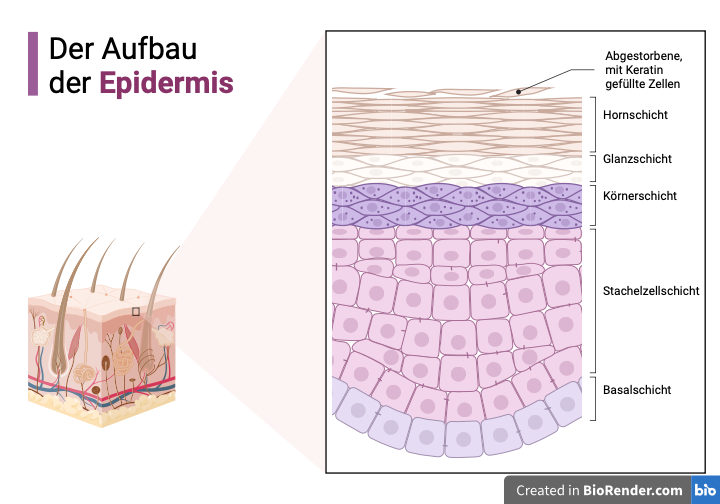
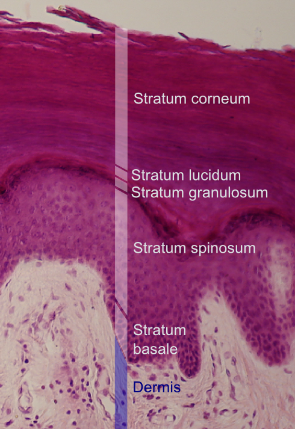
Physiopathologie10
Die Effekte der Radiotherapie an der Haut sind eng mit den Eigenschaften der Basalzellen der Epidermis sowie der Endothelzellen der kleinsten Gefäße in der obersten Schicht der Dermis verknüpft.
In der Epidermis kommt es unter fraktionierter Bestrahlung speziell ab der 3. Woche zu einer Depletion der Basalzellen, die zwischen der 4. und 5. Woche ihren Nadir erreicht.
Bereits ab dem 15. Bestrahlungstag nimmt als Gegenreaktion die mitotische Aktivität der Basalzellen allmählich zu. Deren Mitoserate ist ab der 3. Woche der fraktionierten Strahlenbehandlung bis einige Tage nach deren Abschluss deutlich erhöht, wobei Zellzykluszeiten von nur 15 h möglich sind.
Es resultiert eine exponentiell beschleunigte Regeneration, welche bereits bis zum Ende der 6. Bestrahlungswoche (eingestrahlte Dosis 60 Gy) imstande ist die ursprüngliche Zellzahl wiederherzustellen.
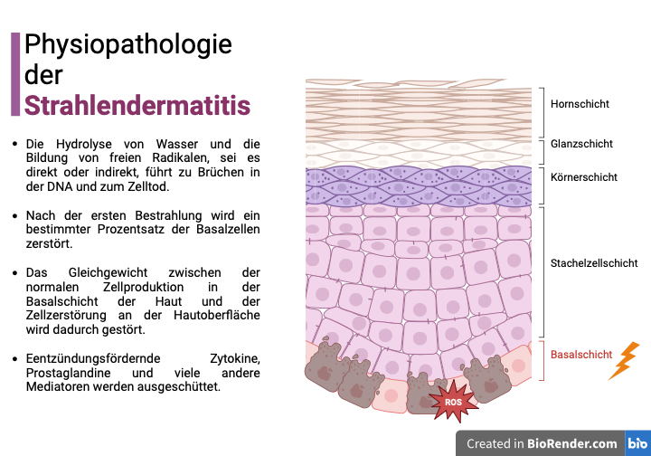
Die akute Strahlenreaktion beginnt mit einem Erythem, welches in der Regel zu Beginn der 3. Bestrahlungswoche klinisch erkennbar wird. Mit zunehmender Dosis kommt es zu persistierender Hyperpigmentierung, Epilation und trockenen Epitheliolysen.
Oberhalb von 45-50 Gy können vermehrt feuchte Epitheliolysen auftreten, welche innerhalb von zwei bis drei Wochen nach Abschluss der Strahlentherapie abheilen. Bei einer Dosis oberhalb von 60 Gy besteht vereinzelt das Risiko persistierender feuchter Epitheliolysen.
Graduierung
Die Einstufung der Strahlendermatitis erfolgt grundsätzlich nach den Common Terminology Criteria for Adverse Events (CTCAE).
Grad 1
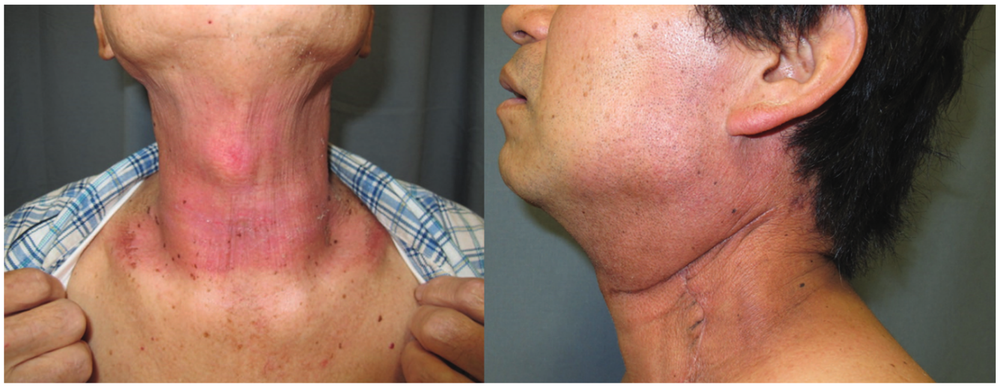
Grad 2
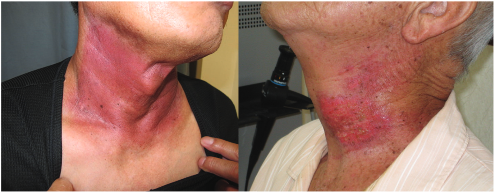
Grad 3
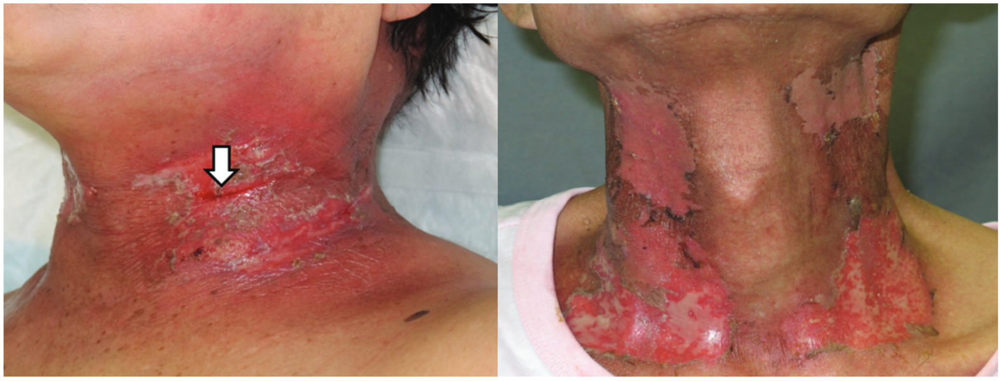
Grad 4
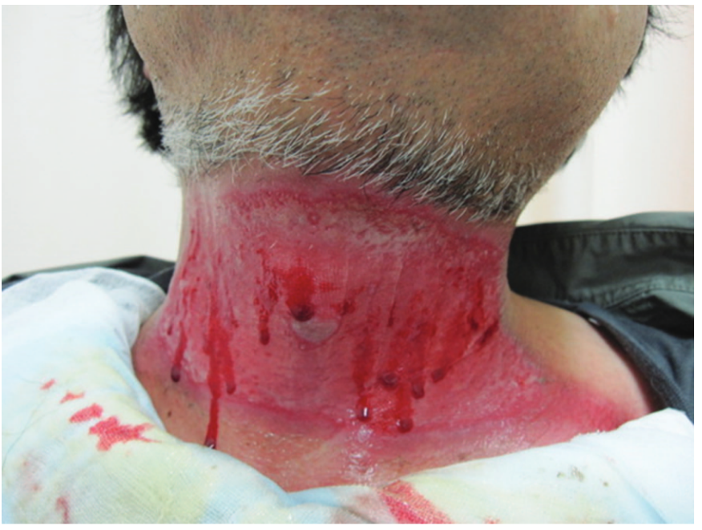
Grad 4 im Sinne der CTCAE bedeutet: lebensbedrohliche Folgen, Hautnekrose oder Ulzeration der gesamten Dermis, spontane Blutungen an der betroffenen Stelle, eine Hauttransplantation ist ggf. erforderlich. Dies ist äußerst selten. Die Behandlung erfolgt stationär.
Prävention und Behandlung
Die Hauptaufgabe der unterstützenden Hautpflege besteht darin, die Integrität der epidermalen Barriere zu erhalten.13
Prävention
Allgemeine Empfehlungen
Der mechanische Schutz durch die äußerste Schicht der Epidermis sollte möglichst lange erhalten werden. Maßnahmen, die eine vermehrte Hautabschürfung begünstigen, sind zu vermeiden Tabelle 1. Dazu gehören eine enganliegende Kleidung, oder auch starke Transpiration.10
Eine Sonnenexposition der bestrahlten Haut ist zumindest bis zur kompletten Abheilung der akuten Hautreaktion grundsätzlich zu vermeiden.
Es gibt jedoch nur wenige Hinweise auf Hautpflegeprodukte, die die Schwere der Hautreaktionen lindern können. Zudem liegen keine ausreichenden Erkenntnisse vor, um Empfehlungen zur Vorbeugung oder Verringerung von Radiodermatitis zu formulieren.11
Im deutschsprachigen Raum sind die Maßnahmen zur Prävention von Strahlendermatitis umstritten, inkonsistent und oft nicht evidenzbasiert. Eine Umfrage unter Radioonkologen (n=244) zeigte, dass Dexpanthenol-Lotion am häufigsten verwendet wird, sowohl zur Vorbeugung (53,0%) als auch zur Behandlung (76,9%) von Strahlendermatitis.15
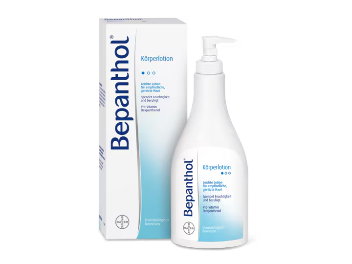
Rationale16
Die Hornschicht (Stratum corneum) ist die Schutzschicht und besteht aus kernlosen Zellen. Eine Störung der epidermalen Barrierefunktion führt zu einer schnellen Reaktion der Keratinozyten, um die Homöostase der Haut wiederherzustellen. Die mRNA, die für proinflammatorische Zytokine, Adhäsionsmoleküle und Wachstumsfaktoren kodiert, wird hochreguliert. Dies potenziert möglicherweisse die Strahlenschäden.
Zudem erhöht eine erhöhte Hautfeuchtigkeit die Elastizität einer trockenen und brüchigen Stratum corneum und verringert das Risiko einer Rissbildung.
Die Basispflege erfolgt dementsprechend mittels Bepanthol® Körperlotion.
cum grano salis
Løkkevik et al. führten eine Studie an 86 Kehlkopf- und Brustkrebspatientinnen durch, die einer Strahlentherapie bekammen. Getestet wurde die Wirkung einer Dexpanthenol-Creme (Bepanthen - Roche) auf bestrahlter Haut im Vergleich zu keiner Creme. Diese Studie zeigte keine klinisch relevante Vorteile der Verwendung von Bepanthen-Creme.17
Natürliche Produkte
Von allen uns bekannte Literatur ist Olivenöl das einzege Naturprodukt, das eine Wirkung als Prophylaxe der Strahlendermatitis zeigt. Jedoch nicht zur Behandlung.18
Behandlung
Topische Kortikosteroide19
Es gibt weltweit nur wenige Produkte mit nachgewiesener entzündungshemmender Wirksamkeit in der Präventions- und Behandlungsphase. Topische Kortikosteroide sind für ihre entzündungshemmende Wirksamkeit bekannt, da sie die durch freie Radikale stimulierte pro-entzündliche Zytokin-IL-6-Kaskade hemmen.
Studien zeigen, dass topische Kortikosteroide die Hauttoxizität während der Strahlentherapie deutlich verringern können.
Miller et al. fanden bei 176 Patienten, dass tägliches Auftragen von 0,1 % Mometasonfuroat (MF) weniger akute Hauttoxizität und weniger Juckreiz, Reizung, Brennen und Unbehagen im Vergleich zu Placebo verursacht.
Hindley et al. bestätigten, dass 0,1 % MF nicht nur Radiodermatitis reduziert, sondern auch die Lebensqualität verbessert.
Boström et al. zeigten, dass die Kombination von 0,1 % MF mit einer lindernden Creme akute Radiodermatitis signifikant verringert.
Eine kleine Studie mit 20 Patienten zeigte, dass Prednisolon mit Neomycin Radiodermatitis besser vorbeugt als Placebo.
Meghrajani et al. berichteten von den Vorteilen präventiver 1%iger Hydrocortison-Anwendung bei Brustkrebspatientinnen (n = 50).
Omidvari und Schmuth zeigten, dass prophylaktisches Betamethason 0,1 % bzw. 0,1 % Methylprednisolon während der Bestrahlung das Auftreten akuter Radiodermatitis bei Brustkrebspatientinnen verzögert.
Für die Dosierung topische Kortikosteroide gilt: Ausreichende Mengen aufschreiben und ausreichende Mengen auftragen.
Die Handflächenregel
Um die Applikationsmenge abzumessen, hat sich das Konzept der Fingertip-Unit (FTU) etabliert Abbildung 11. Eine FTU ist der Salbenstrang aus einer Tube, der auf das Endglied des Zeigefingers passt. Da der Tubenaustritt auf 5 mm genormt ist, ist die ausgetretene Salbenmenge bei jedem Produkt die gleiche und beträgt pro FTU 0,5 g.
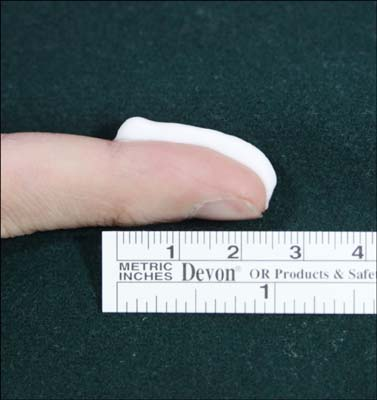
Für die Behandlung eines Hautareals, das in seiner Ausdehnung zwei Handinnenflächen und damit 2 % der Körperoberfläche entspricht, muss der Patient pro Anwendung eine FTU auftragen.20
Frequenz der Applikation
Kortikosteroide haben die Möglichkeit, sich im Stratum corneum zu akkumulieren und sich dann auf die Epidermis/Dermis auszubreiten. Dieser Reservoireffekt erklärt, weshalb eine einzige Applikation pro Tag in den meisten Fällen ausreichend ist.
Bei fehlendem Stratum corneum Abbildung 4 (Erosion, nässende Läsionen) sind zwei Applikationen pro Tag gerechtfertigt.21
Lavasept Gel22
Polyhexanid erfüllt die Kriterien einer effizienten, am Wenigsten toxischen, kosteneffektiven antiseptischenSubstanz.
Aufgrundderheutigen Studienlage kann der Einsatz polyhexanidhaltiger Produkte vermutlich einen wesentlichen Beitragzur Verringerung der Anwendung systemischer Antibiotika und somit von Antibiotikaresistenzen leisten.
Kopf-Halsbereich
Zu den häufigsten unerwünschten Nebenwirkungen von topischen Kortikosteroiden gehören Atrophie, Striae, Rosazea, periorale Dermatitis, akneiforme Eruption und Purpura.
Das Risiko unerwünschter Nebenwirkungen steigt bei längerem Gebrauch, großflächiger Anwendung, höherer Potenz und Anwendung an Stellen mit dünnerer Haut, wie z. B. im Gesicht/Hals und im Genitalbereich.23
Topische Steroide mit geringer bis mittlerer Wirkstärke eignen sich besonders für die Behandlung von Körperstellen mit dünner Haut. Dazu gehören das Gesicht/Hals, die Kniekehlen, die Innenseiten der Ellbogen, die Leistengegend und die Achselhöhlen.24
Topisches Mometasonfuroat (meist 0,1 %) und Betamethason sind die in der Literatur am häufigsten erwähnten topischen Kortikosteroide, was darauf hindeutet, dass die derzeitigen Erkenntnisse die Verwendung sowohl von Mometasonfuroat als auch von Betamethason bei der Vorbeugung von Strahlendermatitis und damit verbundenen Symptomen unterstützen.18
Dermal angewandte Glucocorticoide werden nach ihrer Stärke in Wirkstoffklassen eingeteilt:
Mometasonfuroat gehört zur Klasse III: stark wirksame Kortikosteroide.
Betamethason gehört zur Klasse II: mittelstark wirksame Kortikosteroide
Ein Beispiel für einen Kortikosteroide der Klasse I (schwach wirksame Kortikosteroide) ist Hydrocortison z.B. Hydrocortison-ratiopharm 0,5 % Creme.
Mukositis
Therapie
Schritt
Aufklärung über Mundpflege, einschließlich “bland rinses”, sowie die Vermeidung von Reizstoffen und Ernährung.
Schritt Prophylaxe
Ab Tag 1 der Bestrahlung: Tantum verde® Mundspülung 1-0-1 o.g. Maßnahmen fortführen
Honig, Olivenöl sowie “bland rinses” regelmäßigSchritt
3.1 Bei Xerostomie s. Abschnitt 5.4.1
10 gtt Pilomann® 1% Augentropfen in ca. 20ml Wasser 1-1-1
3.2 Topische Schmerzmedikation
Mundspülung mit Morphin (0,2% , Rezeptur)
3.3 Standard systemische Schmerzmedikation
Zu den klinisch wichtigen akuten Nebenwirkungen der Strahlentherapie im Mund- und Halsbereich gehört die Störung der Funktion und Integrität der Mundschleimhaut. Zu den Folgen gehören schwere Ulzerationen (orale Mukositis) und Pilzinfektionen im Mund (orale Candidiasis).25
In randomisierten, kontrollierten Studien, in denen die konventionelle Strahlentherapie im Vergleich zu einer veränderten fraktionierten Strahlentherapie oder einer kombinierten Strahlen- und Chemotherapie untersucht wurde, wurde bei bis zu 60 % der Patienten, die eine Standard-Strahlentherapie erhielten, und bei bis zu 100 % der Patienten, die entweder ein hyperfraktionierte oder ein Hyperfraktionierte akzelerierte Schema erhielten, eine schwere orale Mukositis festgestellt.26
Die Bewältigung der akuten Phase einer schweren Mukositis erfordert eine intensive stationäre Betreuung, wie z. B. die Verabreichung von intravenöser Flüssigkeit und Elektrolyten, parenteraler Ernährung und Opioid-Analgetika, und beeinträchtigt somit die Lebensqualität über Wochen bis Monate hinweg erheblich.27
Physiopathologie
Die Entstehung der Mukositis ist ähnlich der der Strahlendermatitis s. Abschnitt 4.2. Die Mundschleimhaut besteht jedoch aus Epithelzellen, die sich ca. alle 7–14 Tage regenerieren. Da sich diese Schleimhautzellen schnell teilen, reagieren sie besonders empfindlich auf Chemo- oder Strahlentherapien.
In unsere Alltag tritt Mukositis meist im Mundraum auf bei Radiochemotherapie im Mund-Hals-Bereich. Sie kann jedoch bei andere (systemische) Therapien den gesamten Verdauungstrakt bis hin zum After betreffen.
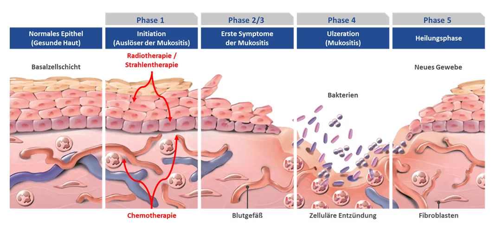
Stufen
Das Erscheinungsbild der Krankheit kann sehr variieren. Daher unterscheidet man verschiedene Schweregrade (0 bis IV), die jeweils einen anderen Handlungsbedarf erfordern s. Abbildung 12 und Tabelle 2.
| Skalen zur Bewertung des Schweregrads der Mukositis | ||||
|---|---|---|---|---|
| Grad | 1 | 2 | 3 | 4 |
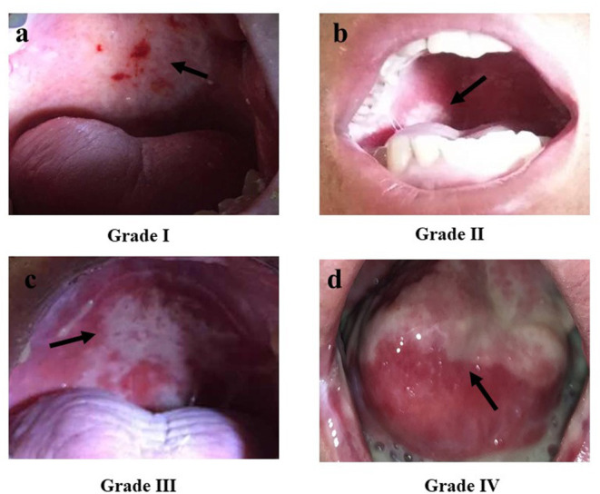
Prävention
Viele systemische Krebstherapien, einschließlich Knochenmarktransplantation, können orale Mukositis verursachen. Zur Vorbeugung werden zudem verschiedene Strategien eingesetzt. Daher lassen sich keine endgültigen Aussagen speziell zur strahlentherapiebedingten Mukositis treffen. Allgemein wirksame Interventionen sind:
- Kryotherapie (Eiswürfel)
- Keratinozyten-Wachstumsfaktor (Palifermin®)
- Sucralfat
Weitere Maßnahmen mit schwächeren Hinweisen auf Nutzen sind:
- Aloe vera
- Amifostin
- Intravenöses Glutamin
- Granulozyten-Kolonie-stimulierender Faktor (G-CSF)
- Honig
- Laser
- Antibiotische Lutschtabletten mit Polymixin/Tobramycin/Amphotericin (PTA)
Der Nutzen dieser Behandlungen kann jedoch von der Art der Krebserkrankung und den verwendeten Behandlungskombinationen abhängen.
Pflege
Laut S3 Leitlinie1 sollten die Maßnahmen der Stellungnahme der deutschen Fachgesellschaften (DEGRO, DGZMK, DGMKG) eingesetzt werden. Wobei diese bereits 2003 veröffentlicht worden sind.
Hier wir folgender empfohlen31 :
Regelmäßige Mundpflege mit Zahnbürste, Zahnseide, milden Spüllösungen („bland rinses“) und Flüssigkeitszufuhr.
Verwendung einer weichen Zahnbürste.
Standardisiertes Protokoll vor Ort unter Einbeziehung der beteiligten Disziplinen (Strahlentherapie, Onkologie, Zahnmedizin und MKG-Chirurgie, HNO-Heilkunde, zur Mundpflege spezialisierte Pflegekraft) zur Aufklärung und Beratung.
Topische Schmerztherapie bei beginnenden Schmerzen, bei nicht ausreichender Schmerzbesserung systemische Schmerzbehandlung.
Fluoridierungsschienen abends nach der Zahnreinigung für 5 bis 10 Minuten. Diese sollte bereits vor Beginn der Bestrahlung begonnen werden und kann bei Schmerzhaftigkeit durch ausgeprägte Mukositis kurzfristig ausgesetzt werden. Alternativ ist (insbesondere bei florider Schleimhautreaktion) die regelmäßige Spülung mit Fluorid-Lösungen zu empfehlen. Dies sollte nach Strahlentherapie konsequent weitergeführt werden (lebenslang).
Zur Vermeidung einer Prothesendruckstelle, die als Epitheldefekt eine Bestrahlungspause erzwingt, gilt unter der Bestrahlung eine strenge Prothesenkarenz. Dies wird ebenso nach Bestrahlung weitergeführt, jedoch differieren die angegebenen Zeitintervalle in der Literatur erheblich.
“Bland rinses”
Hierzu können die Spühlungen mit Wasser allein, oder Wasser mit Kochsalz, oder Wasser mit Natriumbikarbonat (je ½ bis 1 Teelöffel pro Liter) spülen (NCI), auch milder Tee ist geeignet; kein aromatisiertes, saures oder alkoholhaltiges Mundwasser.32
Die Mucositis Study Group der Multinational Association of Supportive Care in Cancer/International Society of Oral Oncology (MASCC/ISOO) führte ein Systematic review der Basis-Mundpflege zur Behandlung der oralen Mukositis bei Krebspatienten durch.
Das Gremium stellte fest, dass Natriumbicarbonat und Natrium (Kochsalz) unschädliche Mundspülungen sind, die für die Aufrechterhaltung der Mundhygiene und den Komfort der Patienten hilfreich sein können.
Darüber hinaus werden eine Reihe weiterer Spüllösungen, wie Tees (Salbei, Kamille), SucralfatSuspension (Ulcogant£), Chloramin-Tee, Speichelersatzmittel und andere empfohlen, wobei die Häufigkeit des Spülens entscheidend zu sein scheint.
Kryotherapie
In sechs Studien wurde die Kryotherapie (Eiswürfel) entweder mit keiner Behandlung oder einer Placebokontrolle (Kochsalzlösung) verglichen. Drei dieser Studien untersuchten den Einsatz der Kryotherapie bei Patienten, die eine Chemotherapie mit 5-FU erhielten. In einer Studie erhielten die Teilnehmer Methotrexat, in einer anderen eine Melphalan-Konditionierung zur Vorbereitung auf eine Stammzellentransplantation, und in einer weiteren Studie erhielten die Patienten vor einer Knochenmark- oder Stammzellentransplantation entweder eine Chemotherapie oder eine Ganzkörperbestrahlung. Bei vier dieser Studien wurde ein hohes Risiko der Verzerrung festgestellt, bei zwei Studien ein unklares Risiko der Verzerrung.33
In der S3 Leitlinie1 wurde keine Empfehlung für oder gegen den Einsatz von Kryotherapie ausgesprochen.
Honig
Laut S3 Leitlinie1 soll Honig nicht zur Prophylaxe der radiogener oraler Mukositis gegeben werden. Als Argument wird unter anderem eine schlechte Akzeptanz in den Studien genannt. Der Aspekt der hochkalorischen, natürlichen Ernährung wird dabei nicht berücksichtigt s. Abschnitt 9.
Studien die die Wirkung von Honig belegen
Tian et al. führten eine systematische Metaanalyse nach den von der Cochrane Collaboration vorgeschlagenen Kriterien durch. Sie schlossen eine Studie in ihre qualitative Synthese und sechs Studien in ihre quantitative Synthese ein. Diese Meta-Analyse deutet darauf hin, dass Honig die Häufigkeit schwerer strahleninduzierter oraler Mukositis deutlich verringern kann. Darüber hinaus kann er den Patienten helfen, ihr Gewicht zu halten, und die Häufigkeit von Behandlungsunterbrechungen aufgrund oraler Mukositis bei Patienten mit HNO Tumore verringern.
Amanat et al. führten eine randomisierte, kontrollierte, klinische Studie durch. Sie bewerteten die Wirkung von Honig auf die klinisch bewerteten Grade der oralen Mukositis bei Patienten (nach RTOG), die eine externe Strahlentherapie mit einer Gesamtstrahlendosis von 60-70 Gy (in 5-6 Wochen) erhielten, und fanden eine signifikante Verringerung der oralen Mukositis in der Behandlungsgruppe im Vergleich zur Kontrollgruppe.
Yang et al.34 führten eine systematische Überprüfung und eine “network meta-analysis” durch, die direkte und indirekte Beweise aus 17 randomisierten kontrollierten Studien kombinierte und stellten fest, dass der Behandlungsarm mit Honig dem Kontrollarm ohne Honig hinsichtlich der Gesamtwirksamkeit der Behandlung überlegen war.
Honig verkürzte auch die Zeit bis zum Auftreten der oralen Mukositis. Insgesamt kamen sie zu dem Schluss, dass Honig bei der Behandlung der durch Chemo-/Strahlentherapie verursachten oralen Mukositis sowohl sicher als auch wirksam ist.
Olivenöl
Es gibt keine Studien, die die Wirksamkeit der topischen Anwendung von Olivenöl bei radiogener Mukositis bewerten. Alkhouli et al. berichteten jedoch, dass Olivenöl topisch auf das orale Gewebe aufgetragen werden kann, um chemotherapieinduzierte orale Mukositis bei Kindern mit akuter lymphatischer Leukämie vorzubeugen. Dementsprechend und Unter dem Aspekt der “hochkalorischen natürlichen Ernährung” kann Olivenöl verwendet werden.
Benzydamin
Benzydamin sollte laut S3 Leitlinie1 zur Prophylaxe der radiogenen Mukositis eingesetzt werden bei alleiniger Strahlentherapie.
Tantum Verde® Gurgellösung ist eine bekannte Option. Diese enthält jedoch Ethanol (96 %) und Minz-Aroma (enthält u. a. Menthol) was eher ätzend wirken könnten. Eine Alternative ist neo-angin® Benzydamin Spray, der ebenso Ethanol (96%) enthält. In den Studien wurde eine Mundspühllösung 4-8 mal täglich angewendet (15 ml, 2 min, Verdünnung erlaubt, von Beginn der RT bis 2 Wochen danach).
Behandlung
Primär sollen topische Schmerzmittel zur Linderung von Schmerzen in der Mundhöhle eingesetzt werden.1
Mundspülung mit Morphin (0,2% , Rezeptur) kann für die topische Behandlung von Schmerzen durch eine radiogene orale Mucositis eingesetzt werden. Genaue Einnahmehinweise sind erforderlich, um versehentliche systemische Nebenwirkungen zu vermeiden.1
Xerostomie
Pilocarpin soll unter Berücksichtigung von Wirksamkeit und Nebenwirkungen für die Behandlung der radiogenen Xerostomie eingesetzt werden. Empfohlen ist eine Dosis von 3x tgl. 5 mg oraler Applikation.1
Was die Behandlung der Xerostomie betrifft, so sind orale Tabletten die wichtigste kommerziell erhältliche Form von Pilocarpin. Insbesondere Salagen® (eine Pilocarpin-HCl-Tablette) beansprucht bisher das Monopol bei der Behandlung der strahleninduzierten Xerostomie, da es das einzige Medikament ist, das sowohl in Europa als auch in den USA zugelassen wurde.
Obwohl die Wirksamkeit der oralen Verabreichung von Pilocarpin gegen das Sjögren-Syndrom und die strahleninduzierte Xerostomie durch zahlreiche Studien belegt ist, ist die systemische Verabreichung dieses Medikaments mit verschiedenen unerwünschten Wirkungen verbunden.
Häufige Nebenwirkungen (>1/10 Patienten)35 :
- Grippe-ähnliche Symptome
- Schwitzen
- Kopfschmerzen
- Häufigere Urinausscheidung
Vor diesem Hintergrund wurden neue Strategien zur Herstellung neuartiger und wirksamer Darreichungsformen für die topische (im Mund) Verabreichung von Pilocarpin entwickelt, um den Speichelfluss bei minimalen systemischen Manifestationen zu verbessern. Vor allem in den letzten zehn Jahren wurden mehrere Studien über die Wirksamkeit topischer Darreichungsformen von Pilocarpin, wie Mundspülungen, Tabletten, Lutschtabletten und Mundsprays, durchgeführt.
Davies and Singer36 führten die erste Studie durch, in der ein künstlicher Speichel mit Pilocarpin bei der Behandlung von strahlenbedingter Xerostomie verglichen wurde. Das Dosierungsschema war 5 mg dreimal pro Tag. Insgesamt zeigte diese Behandlung eine erhöhte Wirksamkeit bei der Linderung der Xerostomie-Symptome.
Danach wurde eine Fülle von Studien veröffentlicht, in denen die Wirksamkeit verschiedener Pilocarpin-Mundspülungen untersucht wurde.
Kapourani et al.37 veröffentlichte einen Review über die verfügbare Literatur und kamen zu dem Schluss, dass die topische Verabreichung von Pilocarpin als gleichwertig mit der systemischen Verabreichung des Medikaments angesehen werden kann (was die Wirksamkeit angeht) jedoch mit einer besseren Patientenverträglichkeit.
Rezeptur:
Pilomann® 1% Augentropfen (1 g Lösung enthält 10,00 mg Pilocarpinhydrochlorid.) So dass 10gtt = ca. 5mg, dementsprechend:
Pilocarpin-Mundspüllösung 10 gtt Pilomann® 1% Augentropfen in ca. 20ml Wasser geben und derimal täglich für jeweils 2 min lang spühlen.
Mundsoor
Die topische antimykotische Therapie ist die erste Wahl bei unkomplizierten Fällen von oraler Candidose und sollte gleichzeitig fortgesetzt werden, wenn eine systemische Behandlung angezeigt ist. Eine systemische antimykotische Therapie ist in der Regel Patienten vorbehalten, die auf eine topische Behandlung nicht ansprechen, die eine topische Therapie nicht vertragen oder bei denen ein erhöhtes Risiko für die Entwicklung systemischer Infektionen besteht.
Amphomoronal 1ml (1 Pippete) 1-1-1-1
Die Behandlung soll 2 bis 3 Tage über das Verschwinden der sichtbaren Symptome hinaus fortgesetzt werden.
Ambulant erworbene Harnwegsinfektionen bei Erwachsenen
Tip
Fosfomycin 3000 mg: 3 g Einmalgabe. 2–3 Stunden nach einer Mahlzeit. (Bei Kreatinin-Clearance < 10 ml/min kontraindiziert)
Nitrofurantoin 100mg Retardkapseln 1-0-1 während oder nach einer Mahlzeit für 5 Tage (bei eGFR <30 mL/min kontraindiziert) CAVE: Nitrofurantoin kann zu einer dunkelgelben oder bräunlichen Färbung des Urins führen.
Trimethoprim/Sulfamethoxazol 160/800 mg 1-0-1 für 3 Tage nach den Mahlzeiten. (eGFR > 30 ml/min Standarddosis, sonst s. Fachinfo)
Eine Harnwegsinfektion wird als unkompliziert eingestuft, wenn im Harntrakt keine relevanten funktionellen oder anatomischen Anomalien, keine relevanten Nierenfunktionsstörungen und keine relevanten Begleiterkrankungen/ Differenzialdiagnosen vorliegen, die eine Harnwegsinfektion bzw. gravierende Komplikationen begünstigen.38
Häufig wird dies in die Literatur wie folgt interpretiert: Eine Infektion bei einer afebrile, nicht schwangere, immunkompetente Patientin. Dementsprechend gelten alle Harnwegsinfektionen bei immungeschwächten Patienten, Männern, schwangere Patienten und solchen, die mit Fieber, Steinen, Sepsis, Harnwegsobstruktion, Kathetern oder Nierenbeteiligung einhergehen, als komplizierte Infektionen.39
Diagnostik
Der Goldstandard zur Diagnose einer Harnwegsinfektion ist bei entsprechender Anamnese und typischen Beschwerden die Urinuntersuchung einschließlich quantitativer Urinkultur und deren Beurteilung.38
Erreger
Häufigster Erreger unkomplizierter Harnwegsinfektionen ist Escherichia coli. Weniger häufig werden Staphylococcus saprophyticus, Klebsiella pneumoniae und Proteus mirabilis nachgewiesen. Andere Erreger sind selten.38
Behandlung
Die bevorzugten Wirkstoffe für die empirische Therapie der akuten einfachen Zystitis sind Nitrofurantoin, Trimethoprim-Sulfamethoxazol, Fosfomycin und Pivmecillinam wegen des günstigen Verhältnisses zwischen Wirksamkeit und unerwünschten Nebenwirkungen (einschließlich des Risikos, das es sich um resistente Organismen handelt). Keine dieser Mittel überwiegt eindeutig die anderen in Bezug auf das Verhältnis von Wirksamkeit und Nebenwirkungen, mit der Ausnahme, dass die Wahrscheinlichkeit einer Resistenz bei Trimethoprim- und Sulfamethoxazol wahrscheinlicher ist und dass Pivmecillinam (und möglicherweise Fosfomycin) etwas weniger wirksam ist. Das optimale antimikrobielle Mittel kann in einer Region anders sein als in einer anderen, abhängig von der Resistenzprävalenz.40
Die S3-Leitlinie nennt folgende Antibiotika in alphabetische Reihenfolge: Fosfomycin-Trometamol, Nitrofurantoin, Nitroxolin, Pivmecillinam, Trimethoprim (bei rezidivierenden Harnwegsinfektionen bestehen häufig Resistenzraten >20%).38
Schlafstörungen
Übelkeit und Erbrechen
Ernährung
Quellenverzeichnis
1.
Deutsche Krebsgesellschaft, Deutsche Krebshilfe, AWMF. S3-Leitlinie Supportive Therapie bei onkologischen PatientInnen. Published online 2020:558.
2.
Benson AB, Ajani JA, Catalano RB, et al. Recommended guidelines for the treatment of cancer treatment-induced diarrhea. Journal of Clinical Oncology: Official Journal of the American Society of Clinical Oncology. 2004;22(14):2918-2926. doi:10.1200/JCO.2004.04.132
3.
Gelbe Liste Online. Alpha-Blocker Gelbe Liste.
4.
Prosnitz RG, Schneider L, Manola J, et al. Tamsulosin palliates radiation-induced urethritis in patients with prostate cancer: Results of a pilot study. International Journal of Radiation Oncology*Biology*Physics. 1999;45(3):563-566. doi:10.1016/S0360-3016(99)00246-1
5.
Jae Heon Kim. Positive Role of Dutasteride in the Treatment of Localized Prostate Cancer. The Korean Journal of Urological Oncology. 2015;(13(1)):24-28.
6.
Girnita A, Bjerring P, Kauppi S, Lynde CW, Sauder MB, Andriessen A. NECOM 3: A Practical Algorithm for the Management of Radiation Therapy-Related Acute Radiation Dermatitis. Journal of drugs in dermatology: JDD. 2023;22(11):SF400354s3-SF400354s10. doi:10.36849/JDD.SF400354
7.
Gauglitz G. Histologische und funktionelle Charakterisierung von primären Keratinozytenkulturen aus dem Läsionsgebiet schwerstverbrannter Patienten. PhD thesis. Ludwig – Maximilians – Universität zu München; 2007.
8.
Imke Satzger. Die Haut - Anatomie und Funktion. Published online July 2020.
9.
Stratum corneum. Wikipedia. Published online July 2024.
10.
Adamietz IA. Hautpflege bei Bestrahlung. Heilberufe. 2022;74(7-8):28-31. doi:10.1007/s00058-022-2308-0
11.
Seité S, Bensadoun RJ, Mazer JM. Prevention and treatment of acute and chronic radiodermatitis. Breast Cancer : Targets and Therapy. 2017;9:551-557. doi:10.2147/BCTT.S149752
12.
Zenda S, Ota Y, Tachibana H, et al. A prospective picture collection study for a grading atlas of radiation dermatitis for clinical trials in head-and-neck cancer patients. Journal of Radiation Research. 2016;57(3):301-306. doi:10.1093/jrr/rrv092
13.
Berger A, Regueiro C, Hijal T, et al. Interest of Supportive and Barrier Protective Skin Care Products in the Daily Prevention and Treatment of Cutaneous Toxicity During Radiotherapy for Breast Cancer. Breast Cancer : Basic and Clinical Research. 2018;12:1178223417752772. doi:10.1177/1178223417752772
14.
Goldinger A. Strahlentherapie: Pharmazeutische Betreuung bei Hautveränderungen. Pharmazeutische Zeitung online. 2006;(49).
15.
Layer JP, Layer K, Glasmacher AR, et al. Pharmaceutical management of acute radiation dermatitis in the German speaking radiation oncology community. Journal der Deutschen Dermatologischen Gesellschaft = Journal of the German Society of Dermatology: JDDG. 2024;22(2):198-207. doi:10.1111/ddg.15279
16.
Lodén M. Skin Barrier Function: Effects of Moisturizers. 2001;116(6).
17.
Løkkevik E, Skovlund E, Reitan JB, Hannisdal E, Tanum G. Skin treatment with bepanthen cream versus no cream during radiotherapy–a randomized controlled trial. Acta Oncologica (Stockholm, Sweden). 1996;35(8):1021-1026. doi:10.3109/02841869609100721
18.
Behroozian T, Goldshtein D, Wolf JR, et al. MASCC clinical practice guidelines for the prevention and management of acute radiation dermatitis: Part 1) systematic review. eClinicalMedicine. 2023;58. doi:10.1016/j.eclinm.2023.101886
19.
Kiprian D, Szykut-Badaczewska A, Gradzińska A, Czuwara J, Rudnicka L. How to manage radiation-induced dermatitis? Nowotwory Journal of Oncology. 2022;72(2):86-95. doi:10.5603/NJO.2022.0017
20.
Bauer-Delto A. Topische Therapie nach der Handflächenregel. hautnah dermatologie. 2020;36(1):42-42. doi:10.1007/s15012-019-0567-5
21.
Weber M, Lautenschlager S. Dermatologische Therapie: Einsatz topischer Steroide. Swiss Medical Forum. Published online 2006:6:341-348.
22.
Roth, Hotz, Mayer, Läuchli, Traber. Konsensus-Empfehlungen zum Einsatz polyhexanidhaltiger Produkte in der Behandlung von Wunden. Praxis. 2011;100(9):531-537. doi:10.1024/1661-8157/a000517
23.
Stacey SK, McEleney M. Topical Corticosteroids: Choice and Application. American Family Physician. 2021;103(6):337-343.
24.
Institute for Quality and Efficiency in Health Care. Eczema: Learn More – Steroids and other topical medications. In: InformedHealth.org [Internet]. Institute for Quality and Efficiency in Health Care (IQWiG); 2021.
25.
Worthington HV, Clarkson JE, Bryan G, et al. Interventions for treating oral mucositis for patients with cancer receiving treatment. Cochrane Database of Systematic Reviews. 2010;2010(4):0-0. doi:10.1002/14651858.cd001973.pub4
26.
Vera-Llonch M, Oster G, May Hagiwara, May Hagiwara, Hagiwara M, Sonis ST. Oral mucositis in patients undergoing radiation treatment for head and neck carcinoma. Cancer. 2006;106(2):329-336. doi:10.1002/cncr.21622
27.
Bowen JM, Wardill HR. The science of mucositis. Supportive Care in Cancer. Published online January 2022. doi:10.1007/s00520-022-06840-x
28.
Niscola P, Romani C, Cupelli L, et al. Mucositis in patients with hematologic malignancies: An overview. Haematologica. 2007;92(2):222-231. doi:10.3324/haematol.10232
29.
Burg Pharma GmbH. Mukositis (Mucositis) Ratgeber: Symptome, Prophylaxe und Behandlung. Mukositis Ratgeber.
30.
Liu S, Zhao Q, Zheng Z, et al. Status of Treatment and Prophylaxis for Radiation-Induced Oral Mucositis in Patients With Head and Neck Cancer. Frontiers in Oncology. 2021;11:642575. doi:10.3389/fonc.2021.642575
31.
DGZMK. Wissenschaftliche Stellunnahme der der deutschen Fachgesellschaften (DEGRO, DGZMK, DGMKG). Published online 2003.
32.
McGuire DB, Fulton JS, Janet S. Fulton, et al. Systematic review of basic oral care for the management of oral mucositis in cancer patients. Supportive Care in Cancer. 2013;21(11):3165-3177. doi:10.1007/s00520-013-1942-0
33.
Worthington HV, Clarkson JE, Bryan G, et al. Interventions for preventing oral mucositis for patients with cancer receiving treatment. Cochrane Database of Systematic Reviews. 2011;(4). doi:10.1002/14651858.CD000978.pub5
34.
Yang C, Gong G, Jin E, et al. Topical application of honey in the management of chemo/radiotherapy-induced oral mucositis: A systematic review and network meta-analysis. International Journal of Nursing Studies. 2019;89:80-87. doi:10.1016/j.ijnurstu.2018.08.007
35.
Fachinformation: Salagen 5 mg Filmtabletten. Published online July 2023.
36.
Davies AN, Singer J. A comparison of artificial saliva and pilocarpine in radiation induced xerostomia. The Journal of Laryngology & Otology. 1994;108(8):663-665. doi:10.1017/S0022215100127768
37.
Kapourani A, Kontogiannopoulos KN, Barmpalexis P. A Review on the Role of Pilocarpine on the Management of Xerostomia and the Importance of the Topical Administration Systems Development. Pharmaceuticals. 2022;15(6):762. doi:10.3390/ph15060762
38.
Deutsche Gesellschaft für Urologie e. V. (Hrsg.). S3 Leitlinie: Epidemiologie, Diagnostik, Therapie, Prävention und Management unkomplizierter, bakterieller, ambulant erworbener Harnwegsinfektionen bei Erwachsenen – Aktualisierung 2024. Published online April 24AD.
39.
Sabih A, Leslie SW. Complicated Urinary Tract Infections. In: StatPearls. StatPearls Publishing; 2024.
40.
Gupta K. Acute Simple Cystitis in Adult and Adolescent Females. Vol UpToDate, Connor RF (Ed), Wolters Kluwer. Wolters Kluwer; 2024.